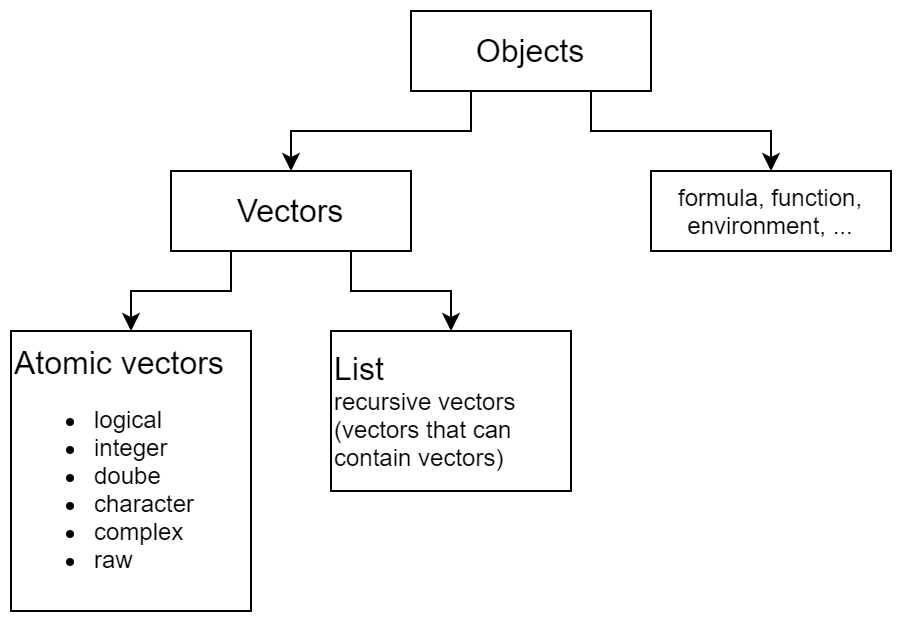

Chapter 1 Objects
To understand computations in R, two slogans are helpful:
- Everything that exists is an object.
- Everything that happens is a function call.
— John Chambers
1.1 Inspect object
str(): struction of object, get unsystematic overviewtypeof(): “low-level” type of an objectmode(): storage mode of an object- Determines how an object is stored
class(): “high-level” class of object- Determines what method is applied when passed to generic functions
typeof() and mode() are almost the same (at the same level) except that they use different names
typeof() |
mode() |
|---|---|
integer, double |
numeric |
special, builtin |
function |
symbol |
name |
language |
(, call |
class() is on a complete different level and determines what method is applied when passed to generic functions. Some classes are explicitly stated as an attribute, others are implicitly given by the mode
For historical reasons (back compatibility with S / S+), another low-level inspector function is storage.mode().
| expr | object | typeof | storage.mode | mode | class |
|---|---|---|---|---|---|
| 1 | 1 | double | double | numeric | numeric |
| 1:2 | 1 2 | integer | integer | numeric | integer |
| pi | 3.141593 | double | double | numeric | numeric |
| 1i | 0+1i | complex | complex | complex | complex |
| NA | NA | logical | logical | logical | logical |
| c(‘A’, ‘b’, ‘:::’) | A b ::: | character | character | character | character |
| mean | function (x, … | closure | function | function | function |
| c | .Primitive(“c”) | builtin | function | function | function |
function |
.Primitive("func | special | function | function | function |
| as.name(‘Mä’) | Mä | symbol | symbol | name | name |
| quote(x) | x | symbol | symbol | name | name |
quote({) |
{ | symbol | symbol | name | name |
| expression(1+1) | expression(1 + 1 | expression | expression | expression | expression |
| call(‘round’,10) | round(10) | language | language | call | call |
| quote(sin(x)) | sin(x) | language | language | call | call |
| y ~ x+t | y ~ x + t | language | language | call | formula |
| formals(lm) | qr TRUE FAL | pairlist | pairlist | pairlist | pairlist |
| formals(lm)[[1]] | symbol | symbol | name | name | |
| NULL | NULL | NULL | NULL | NULL | NULL |
1.2 Classifications
Objects can be ordered in a hirarchical structure

- Vector
- Atomic vector
- Matrix
- Array
- List
- Data frame
- Atomic vector
- Function
- Primitive
- Closure
- Environment
- Symbol
- Call
- Expression
- Forumla
- …
Some objects are building blocks for other objects
- Symbols can be combined to calls.
- Calls can be combined to expressions
1.3 Basic Objects
1.3.1 Vectors, functions and environments
Vectors will be covered in chapter 2, functions in chapter 3 and environments in chapter 4
1.3.2 Symbols
- A way to refer to R objects by name
- Constituent of calls
- Type: symbol
- Class: name
## [1] "symbol"1.3.3 Calls
- An unevaluated expression which consists of the named function applied to the given arguments
- Class: call
- Type: language
- Evaluate a call with
eval()
| Action | R command |
|---|---|
| Create | call() or quote() |
| Check | is.call() |
| Coerce | as.call() |
## [1] 0.8414710 0.9092974 0.14112001.3.4 Expression
- Lists of calls
expression()returns its arguments as a vector of unevaluated expressions.quote()returns its argument as an unevaluated expression.eval()evaluates an expression in a certain environment
## [1] 21.3.5 Formulas
- Formulas contain a
~and at least one predictor variable - Formulas are
- unevaluated expressions
- attributes
- class
formula - environment
- class
- The additional environment attribute is what separates them from expressions
- makes sure that terms in formula can later be associated with vectors of values.
form1 <- ~x
class(form1)
## [1] "formula"
attributes(form1)
## $class
## [1] "formula"
##
## $.Environment
## <environment: R_GlobalEnv>
length(form1)
## [1] 2
form2 <- y ~ x + I(x^2) + x:z
class(form2)
## [1] "formula"
length(form2)
## [1] 3
form2[[1]]
## `~`
form2[[2]]
## y
form2[[3]]
## x + I(x^2) + x:z| Action | R command |
|---|---|
| Create | formula() or just type it (automatically detected based on ~) |
| Check | plyr::is.formula() |
| Coerce | as.formula() |
Functions to inspect/change formulas
terms()all.vars()update()
Formula syntax is a way to specify linear models.
y ~ model: response y is modeled by linear predictormodelconsists of terms separated by+- Single terms consist of variable/factor names separated by
: - Such a term is interpreted as the interaction of all the variables and factors appearing in the term.
| Symbol | Example | Meaning |
|---|---|---|
~ |
Y ~ X |
Y is response variable, X is predictor |
+ |
+ X |
Add X to linear predictor |
- |
- X |
Remove X from linear predictor |
: |
X:Z |
Interaction between X and Z |
* |
X*Y |
X + Y + X:Y |
^ |
(X+Y+Z)^3 |
All terms and all interaction up to tree way interaction |
| |
X|Z |
conditioning: X given Z |
I |
I(X*Z) |
as is (escape formula meaning of *), product of X and Z |
log() |
log(X) |
log(X), not necessary to escape because log() has no special formula interpretation |
1 |
X - 1 |
Intercept: remove intercept which is automatically included |
/ |
X/Z |
X + X:Z (Z as nested factor in X) |
%in% |
X + Z %in% X |
X + X:Z (Z as nested factor in X) |
poly() |
poly(x,2) |
Orthogonal polynomials up to degree 2 |
Error() |
Error(X) |
Additional error term determined by factor X |
. |
Y ~ . |
Two interpretations. 1) Model fitting: all columns not otherwise in the formula, 2) update.formula(): what was previously in this part of the formula |
Special cases in lme4
(1 | batch/cask) is equivalent to (1 | batch) + (1 | batch:cask)
Check if formula constructs your expected model with model.matrix()
y ~ (x1 + x2)^3 does not make sense. 3-Way interactions are only possible between at least 3 variables.
Update formulas with the update() function
Formula examples: